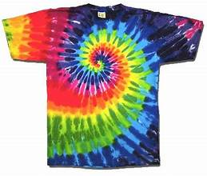

Tutorial Membuat TYE DYE

Bahan yang Dibutuhkan:
1. Kain atau Pakaian Putih
Pilih bahan katun 100% atau serat alami agar warna lebih menyerap dengan baik.
2. Pewarna Kain
Pewarna khusus kain seperti Rit Dye, Dylon, atau pewarna batik lokal.
3. Karet Gelang atau Tali
Untuk mengikat kain agar membentuk pola unik.
4. Sarung Tangan Karet
Untuk melindungi tangan dari pewarna.
5. Botol Semprot atau Aplikator Pewarna
Untuk mengaplikasikan pewarna dengan mudah.
6. Ember dan Air
Untuk merendam kain sebelum diwarnai.
7. Plastik atau Alas
Untuk melindungi permukaan kerja dari pewarna.
Langkah-Langkah Membuat TYE-DYE:
1. Siapkan Kain atau Pakaian
2. Pilih Pola Tie-Dye Pola Spiral:
3. Larutkan Pewarna
4. Warnai Kain
5. Bungkus dan Diamkan
6. Bilas dan Cuci
7. Keringkan Kain